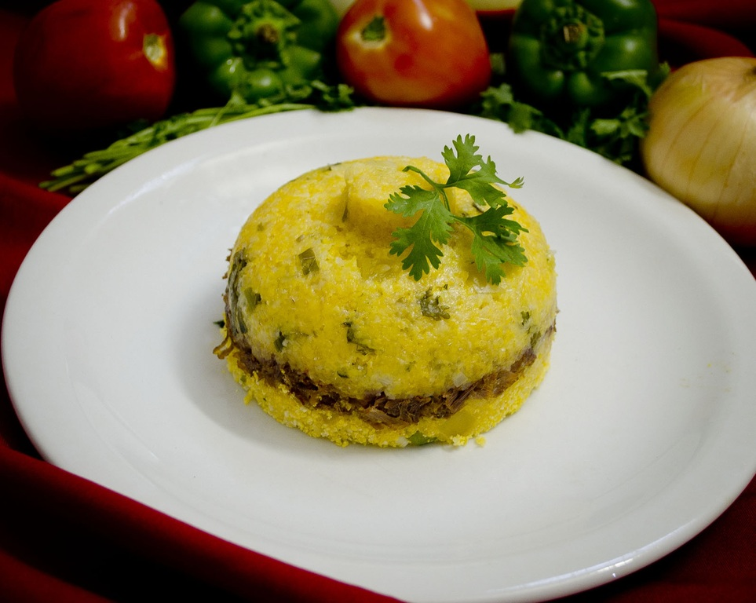

Couscous

The food so nice, they named it twice!
Ingredients
- 1 cup (200g) uncooked couscous
- 1½ cups (360ml) boiling water or vegetable broth
- 1 tbsp olive oil (or butter)
- ½ tsp salt
Directions
- In a large bowl, combine the couscous, olive oil, and salt. Pour the boiling water or broth over the couscous.
Immediately cover the bowl with a lid or plate. Let it steam for 5 minutes until the liquid is absorbed.
- Use a fork to gently fluff the couscous, breaking up any clumps.
- In a pan, sauté diced veggies in olive oil until tender (3–4 minutes). Mix into the couscous. Stir in herbs,
dried fruit, nuts, or lemon zest for extra flavor and texture.
- Taste and adjust seasoning with salt, pepper, or a drizzle of olive oil. Serve warm or at room temperature.